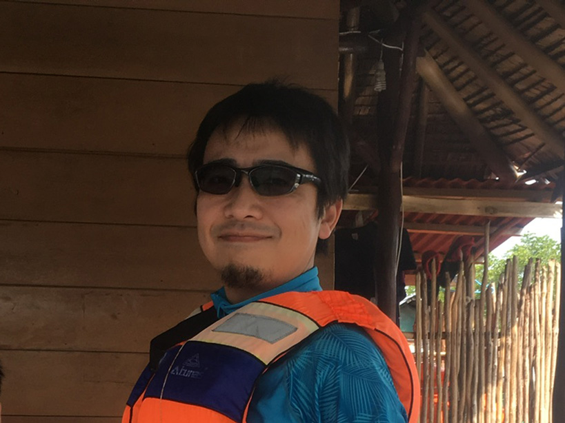

Dr. Web
Top
About
Skill
Service
Contact
Welcome to Dr. Web
I am Boston.
My name is 'Boston', major was Chemistry in the university.
I have started working as WEB creator since 2020.
I am going to create nicer and creative WEB pages for you with whole my heart.

@web_boston
群馬県出身 東京都在住
横浜国立大学工学府博士課程後期修了: 工学博士 (2008)
精密機器メーカー開発職：2003−2010
同メーカー米国現地法人駐在, 研究職：2010−2016
米国から帰任, 同メーカー企画職：2016−2020
2020年8月 WEBプログラミング言語の学習開始
2020年11月 WEBサイト制作サービス開始予定
2020年11月 プレゼン資料制作サービス開始予定